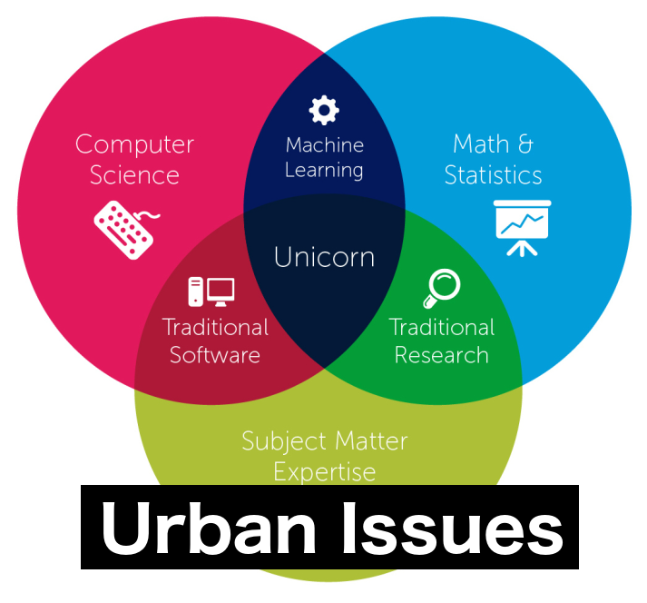
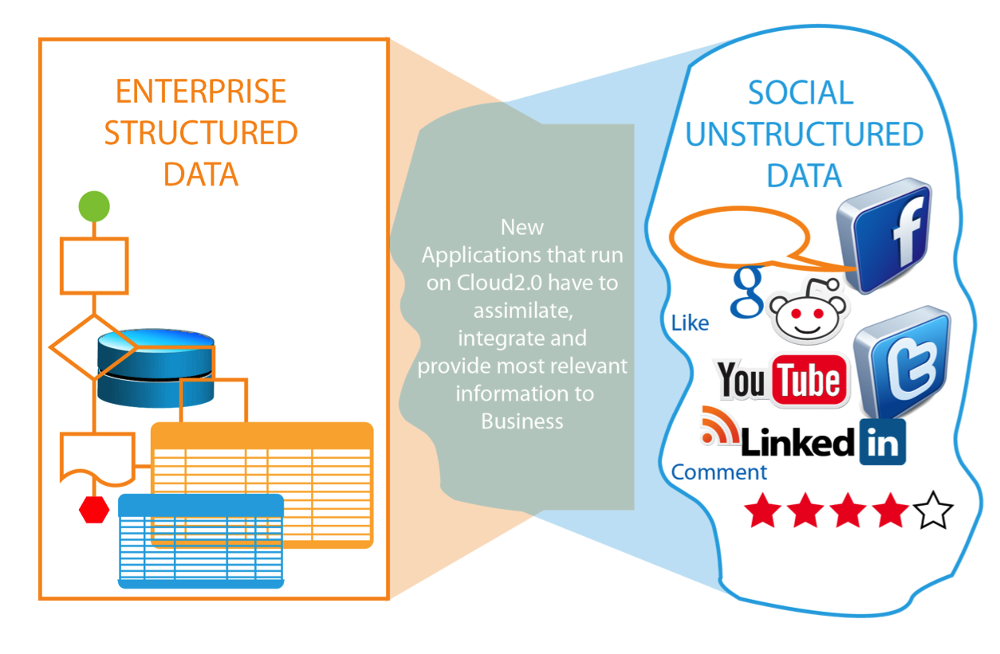
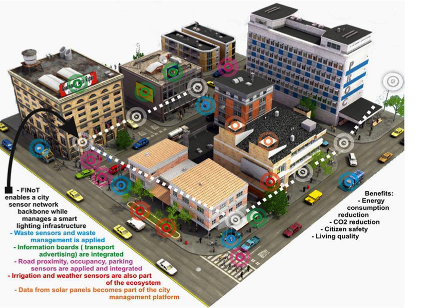
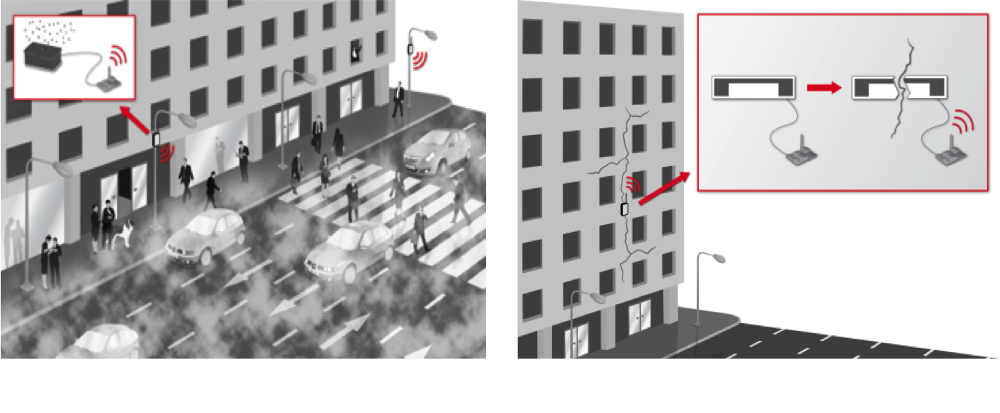
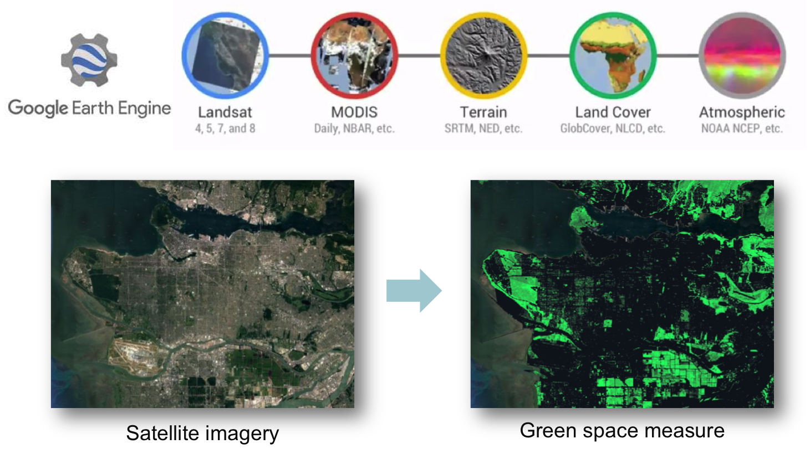

Urban Big Data Analytics
Class 1
Course Introduction
July 18, 2018
Instructor: Andy Hong, PhD
Postdoctoral Research and Teaching Fellow
School of Population and Public Health
University of British Columbia
A bit about me
▸ Postdoctoral fellow in the School of Population and Public Health
▸ Co-founder of Healthy Cities Network
▸ Studied informatics, geography, and public policy
▸ Bike commuter and hiker
▸ A father of two kids
Course overview
- Updated course syllabus (link)
- 3 assignments
- 11 group sessions
- 1 group project
| What this course is |
What this course is NOT |
- Introduction to urban data science
- Learn to think and talk like data scientists
- Learn how to wrangle, explore, and analyze data
|
- Learn how to program
- Learn statistics and math
- Learn GIS and mapping skils
|
Let's break the ice
- Tell us your name and where you are from
- Your job or school major
- Why are you taking this course?
- How good is your coding skills? (from 1 to 5)
What is urban data science?

What are urban issues?
- Health issues: air pollution, noise pollution
- Environmental issues: climate change (coastal cities), extreme heat
- Traffic congestion, safety, crime
- Housing, income inequality, racial segregation
Urban "big" data
- Every day, we create 2.5 quintillion bytes of data
- 90% of the data today has been created in the last 2 years alone.
What is big data?
- Three Vs: Volume, Velocity, Variety
- Very large data that cannot be possibly handled with typical softwares, like Excel
- Data volume contiues to increase. ex) Sensor data (IoT), crowdsourced data
- Everything as data, not just text but also images, videos, tweets, etc.
Big data = Structured + Unstructured data

Smart cities and Internet of Things

Real-time sensors = Big data

Rise of spatial big data

Age of cloud computing
| Pre cloud days |
Post cloud days |
- Downloading and patching together satellite images
- Long time to load gigabytes of satellite images
- Take several days to process large raster data
|
- All the sattellite data stored on a public cloud
- No need to install software. Everything in a browser
- Google Earth Engine: data processing on the fly
|
Group session
https://www.gapminder.org/tools
- Group 1: Income x Life expectancy
- Group 2: Income x Life expectancy
- Group 3: Income x CO2
- Group 4: Income x CO2
- Group 5: Income x Babies per woman
- Group 6: Income x Babies per woman
- Group 7: Income x Child mortality
- Group 8: Income x Child mortality